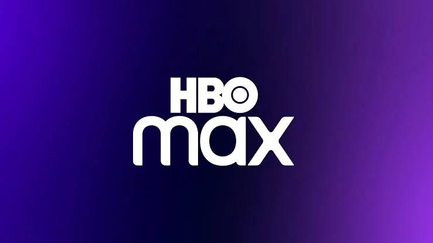
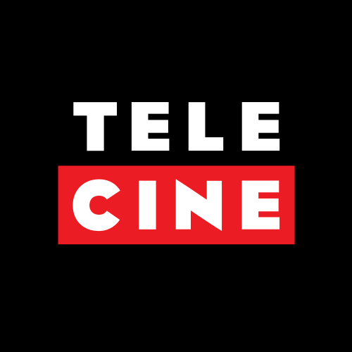

Séries
A primeira série brasileira criada é Vale dos Esquecidos, lançado em 2022, feito pelos diretores Daniel Lieff, Fábio Mendonça, André Gustavo Délão, Rodrigo Meireles e Paulinho Caruso. Um grupo de jovens que se aventura numa trilha na floresta e vai parar numa cidade perdida no tempo, habitada por moradores estranhos, cheio de mistérios para desvendar e uma névoa que parece não ter fim.
Aqui esta uma lista de top 10 séries
1- American Horror Story,
2- Hannibal,
3- The Terror,
4- A Maldição da Residência Hill,
5- Marianne,
6- Channel Zero,
7- Castle Rock,
8- Eu vi,
9- The Walking Dead,
10- O Gabinete de Curiosidades de Guillermo Del Toro,
Aplicativos para assistir os filmes
- HBO Max

É um serviço de streaming over-the-top de vídeo por assinatura sob demanda norte-americano. É propriedade da Warner Bros, Discorvery Global, Streaming & Intertainment.
- Amazon Prime Video
É um serviço online de streaming norte-americano de vídeo sob demanda por assinatura lançado em 2006, disponível em mais de 200 países.
- Telecine

É o equipamento utilizado para o processo de telecinagem ou transferência de imagens de filme para vídeo ou vice-versa.
- Globoplay
É um aplataforma de digital de streaming de vídeos e áudio sob demanda, desenvolvida e operada pela Globo, lançada em 2015.
- Netflix
É um serviço online de streaming e uma empresa norte-americana de mídia over-the-top lançada em 2010.